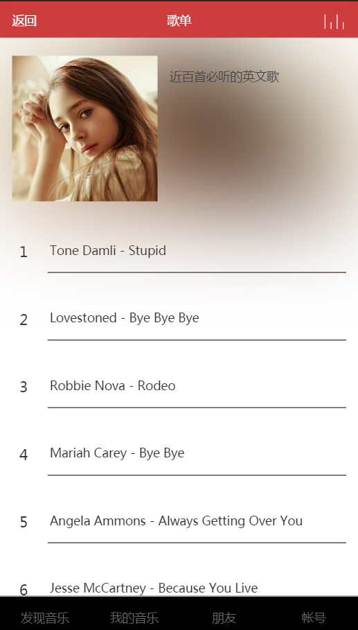
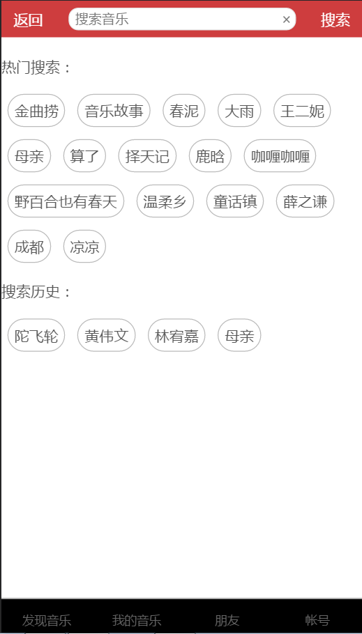
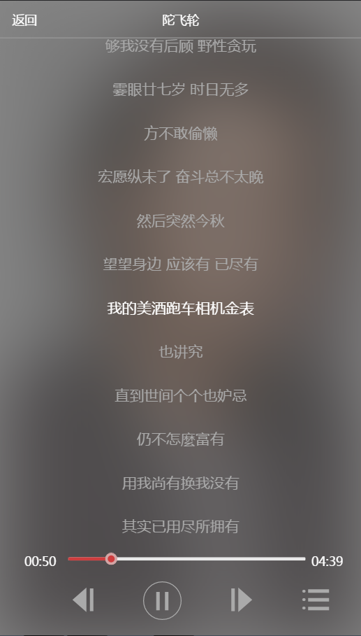

该项目作为react技术栈的练手项目，使用了酷狗和网易云的数据。
其中酷狗的数据拉取，相对容易；网易云数据的拉取，参照： https://binaryify.github.io/NeteaseCloudMusicApi/
感谢ScorpionJay同学，该项目前期的工作，大量都由他完成。
前端坑多，该项目还有很多bug，欢迎一起学习交流，共同爬坑。
开发这个项目，我参阅的学习文档如下：
 

react + react-router + redux + webpack + ES6 + fetch + sass + flex
r-music
│ .babelrc
│ .eslintrc.js
│ .gitignore
│ package.json
│ README.md
│ server.js //node启动脚本
│ webpack.config.js
│
├─config
│ webpack.dev.js //开发环境的webpack配置文件
│ webpack.hash.js //开发环境的webpack配置文件
│ webpack.prod.js //生产环境的webpack配置文件
│
└─src
│ api.js //封装的fetch
│ app.js
│ config.js //api接口配置文件
│ index.hash.js
│ index.js
│ index.temp.hash.html
│ index.temp.html
│ routers.js //路由
│ storage.js //window.localStorage的各种方法
│
├─components //组件
│
├─containers //页面
│ account.js
│ album.js
│ friend.js
│ home.js
│ music.js
│ play.js
│
├─images
│ favicon.ico
│
├─json
│ home.json
│
├─actions //redux -- action
│ album.js
│ dialog.js
│ home.js
│ .
│ .
├─reducers //redux -- reducer
│ album.js
│ dialog.js
│ home.js
│ index.js
│ login.js
│ message.js
│ music.js
│ spin.js
│ user.js
│
stores //redux -- store
│ index.js
│
└─sass //样式文件
common.scss
home.scss
login.scss
main.scss
pagination.scss
slider.scss
git clone https://github.com/ScorpionJay/r-music.git
cd r-music
npm install
npm run dev
该命令在package.json的scripts中，即"dev": "webpack-dev-server --config webpack.config.js --hot"，启动一个服务。
如果一切正常，会自动打开浏览器并访问http://localhost:9999。
// config/webpack.dev.js部分代码
devServer: {
contentBase: "./src",//本地服务器所加载的页面所在的目录
historyApiFallback: true,//不跳转
inline: true,//实时刷新
host: '0.0.0.0',
port:9999,
// 设置代理
proxy:{
"/kugou": {
target: "http://m.kugou.com",
changeOrigin: true,
pathRewrite: {"^/kugou" : ""}
}
}
}
因为在 config/webpack.dev.js设置了host:'0.0.0.0'，所以同局域网的其他手机或PC也可以通过ip+端口号访问。
proxy，设置代理，是为了解决跨域的问题。
npm run build
该命令会将所有文件打包，并放在dist目录下。
安装好nginx，找到nginx.conf，并添加如下代码（与默认80端口的server同级，这里只列出了主要的配置项）
server {
#端口号
listen 8666;
#项目根目录位置
root E:/r-music/dist
#访问首页文件
location / {
index index.html
try_files $uri /index.html // 解决刷新页面404问题
}
#缓存静态文件，30d表示30天，可按需调整大小
location ~ ^/(images|javascript|js|css|flash|media|static)/ {
expires 30d;
}
#设置代理，解决跨域
location ^~/kugou/{
rewrite ^/kugou/(.*)$ /$1 break;
proxy_pass http://m.kugou.com;
}
location ^~/ad/{
rewrite ^/ad/(.*)$ /$1 break;
proxy_pass http://ads.service.kugou.com;
}
location ^~/musicSearch/{
rewrite ^/musicSearch/(.*)$ /$1 break;
proxy_pass http://mobilecdn.kugou.com;
}
location ^~/mobilecdn/{
rewrite ^/mobilecdn/(.*)$ /$1 break;
proxy_pass http://mobilecdn.kugou.com;
}
#网易MV的数据，详见https://binaryify.github.io/NeteaseCloudMusicApi/
location ^~/NeteaseCloudMusicApi/{
rewrite ^/NeteaseCloudMusicApi/(.*)$ /$1 break;
proxy_pass http://www.cenuon.com:3000;
}
}
重启nginx即可
nginx -s reload
通过我自己的理解方式，简单地整理了react、redux、react-redux三者之间的关系图，如下：

注：下面代码只列出搜索功能的关键部分，源码地址：https://github.com/ScorpionJay/r-music
react-redux提供的Provider组件，可以让容器组件取得state。
import configureStore from './stores'
const store = configureStore()
<Provider store={store}>
<Router history={browserHistory} routes={routers} />
</Provider>
上面代码中，Provider使得Router的所有子组件可以取得state。
import configureStore from './stores'为redux的store，如下：
import reducers from '../reducers/index';
export default function(initialState) {
let createStoreWithMiddleware
// 判断环境是否logger
if (process.env.NODE_ENV === 'production') {
createStoreWithMiddleware = applyMiddleware(thunk)(createStore);
}else{
//开发环境在console可以看到整个状态树的实时日志
const logger = createLogger();
createStoreWithMiddleware = applyMiddleware(thunk,logger)(createStore);
}
let store = createStoreWithMiddleware(reducers, initialState);
return store;
};
import React, { Component, PropTypes } from 'react'
import { connect } from 'react-redux'
import { searchHotAPI,searchResultAPI,clearSearchResultAPI} from '../actions/search'
class Search extends Component {
constructor(props) {
super(props);
}
componentDidMount(){
const { dispatch } = this.props
dispatch(searchHotAPI())
}
searchEvt(keyword,page=1){
const { dispatch } = this.props;
keyword = keyword || this.refs.keyword.value
if(keyword!=''){
dispatch(searchResultAPI(keyword, page));
}else{
dispatch(clearSearchResultAPI());
}
this.refs.keyword.value = keyword;
}
render() {
const { dispatch,controll,search } = this.props;
return (
<div className='root' style={{fontSize:'1.2rem'}}>
//...
</div>
)
}
}
function map(state) {
return {
search: state.search,
controll: state.music.controll
}
}
export default connect(map)(Search)
react-redux的connect方法，用于从 UI 组件生成容器组件。
上面代码中，connect(map)(Search)使得组件Search可以通过props取得map返回的数据。
dispatch(searchHotAPI())和dispatch(clearSearchResultAPI())，获取数据并分发action。
import Config from '../config'
import { spin,spinHidden } from './spin'
import api from '../api'
import Storage from '../storage'
//定义常量
export const SEARCH_HOT = 'SEARCH_HOT'
export const SEARCH_RESULT = 'SEARCH_RESULT'
//actionCreator,这里是一个函数，返回action对象
const searchHot = (obj) => {return {type:SEARCH_HOT, obj}}
const searchResult = (obj) => {return {type:SEARCH_RESULT, obj}}
//搜索热门关键字
export function searchHotAPI(){
return async dispatch => {
try{
let hots = await api( Config.searchHotAPI );
dispatch(searchHot(hots.data.info));
} catch(error) {
console.log(error);
}
}
}
//通过关键字搜索
export function searchResultAPI(keyword,page){
return async dispatch => {
try {
let result = await api( Config.searchResultAPI, 'get', {keyword,page} );
//搜索历史存到localStorage
setSearchHistory(keyword);
dispatch(searchResult(result.data.info));
} catch(error) {
console.log(error);
}
}
}
上面代码中，searchHot和searchResult都是Action creator，即分别返回一个action。
action是一个带有type关键字的对象，如{type:SEARCH_HOT, obj}和{type:SEARCH_RESULT, obj}。
searchHotAPI和searchResultAPI分别返回一个获取数据并分发action的异步函数，一般在容器组件里会调用。
import { combineReducers } from 'redux'
import { SEARCH_HOT,SEARCH_RESULT } from '../actions/search'
function hots(state = [], action){
switch(action.type) {
case SEARCH_HOT:
return action.obj;
default:
return state;
}
}
function result(state = [], action){
switch(action.type) {
case SEARCH_RESULT:
return action.obj;
default:
return state;
}
}
const Reducers = combineReducers({
hots,result,
})
export default Reducers
上面代码中，hots函数收到名为SEARCH_HOT的 Action 以后，就返回一个新的 State，作为热门搜索的结果。
在src/store/index.js中，开发环境下，引入了中间件redux-logger的createLogger，在浏览器console可以观察到每次reducer的结果，如下：

import { combineReducers } from 'redux'
//...
import search from './search'
const reducers = combineReducers({
//...
search,
})
export default reducers
Reducer 是一个函数，它接受 Action 和当前 State 作为参数，返回一个新的 State，然后View发生变化。
combineReducers将多个拆分的reducer合并。